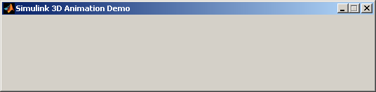
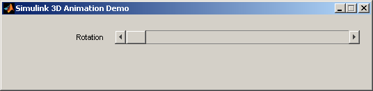
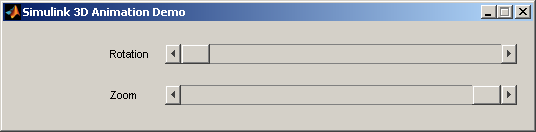
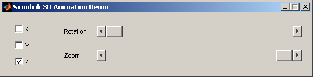
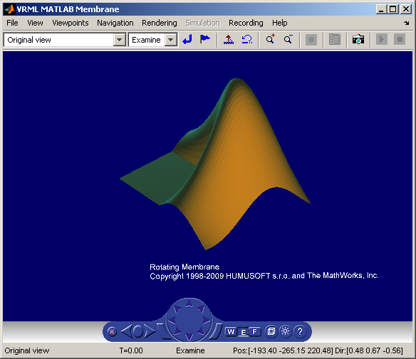

Rotating Membrane with MATLAB® GUI
The vrmemb example shows how to use a MATLAB® generated 3-D graphic object with the Simulink® 3D Animation™. The famous membrane was generated by the logo function and saved in the VRML format using the MATLAB standard function vrml. You can save all Handle Graphics® objects this way and use them with the Simulink 3D Animation as components of associated virtual worlds.
After starting the demo, you will see a control panel with two sliders and three check boxes. Use the sliders to rotate and zoom the membrane while you use the check boxes to determine which axis to rotate around.
In the VRML scene, it is interesting to notice the text object. It is a child of the VRML Billboard node. You can configure this node so that its local Z-axis turns to point to the viewer at all times. This can be useful for modeling virtual control panels and head-up displays (HUD).
Contents
Create a World Object
We begin by creating an object of class VRWORLD that represents the virtual world. The VRML file that constitutes the world was previously made using the V-Realm VRML builder contained in the Simulink 3D Animation product. The name of the file is MEMBRANE.WRL.
wh = vrworld('membrane.wrl');
The membrane object was generated using the function 'logo' and saved in VRML format using the function 'vrml'. After some minor modifications in the VRML editor, it is directly usable by the Simulink 3D Animation.
After starting the demo you will see a control panel with two sliders and three checkboxes. The sliders are used to rotate and zoom the membrane while the checkboxes determine around which axis to rotate.
Open the Virtual World
The world must be opened before it can be used. This is accomplished with the OPEN command.
open(wh);
Accessing VRML Nodes
To access a VRML node, an appropriate VRNODE object must be created. The node is identified by its name and the world it belongs to.
H.membrane = vrnode(wh, 'Membrane'); H.view1 = vrnode(wh, 'View1');
Create Dialog
The dialog is used to interactively change field values of the VRML node referred to by the VRNODE object just created.
figh = dialog('Position',[358 402 530 107], 'Name', 'Simulink 3D Animation Demo', ... 'WindowStyle', 'normal', ... 'CloseRequestFcn', ... 'w = vrworld(''membrane.wrl''); close(w); try; delete(w); end; closereq');
Create Rotation Control
uicontrol('Parent',figh, 'Position',[108 68 50 14], 'HorizontalAlignment','left', ... 'String','Rotation', 'Style','text'); H.rotation = uicontrol('Parent',figh, 'Style','slider', 'Position',[164 65 352 20], ... 'Min', 0, 'Max', 2*pi, ... 'Callback', ['cur_rot = get(H.rotation,''Value'');', ... 'cur_x = get(H.xaxis,''Value'');', ... 'cur_y = get(H.yaxis,''Value'');', ... 'cur_z = get(H.zaxis,''Value'');', ... 'if (cur_x || cur_y || cur_z)', ... ' H.membrane.rotation = [cur_x cur_y cur_z cur_rot];', ... 'end' ]);
Create Zoom Control
H.zoom = uicontrol('Parent',figh, 'Style','slider', ... 'Position',[164 24 352 20], 'Value', 1, ... 'Callback', 'H.view1.fieldOfView = 0.25 + 0.55 * (1-get(H.zoom,''Value''));'); uicontrol('Parent',figh, 'Position',[108 27 50 14], 'String','Zoom', ... 'Style','text', 'HorizontalAlignment','left');
Add Checkboxes
H.xaxis = uicontrol('Parent',figh, 'Position',[24 70 60 20], 'String','X', ... 'Style','checkbox'); H.yaxis = uicontrol('Parent',figh, 'Position',[24 42 60 20], 'String','Y', ... 'Style','checkbox'); H.zaxis = uicontrol('Parent',figh, 'Position',[24 14 60 20], 'String','Z', ... 'Style','checkbox', 'Value', 1); setappdata(figh, 'Handles', H);
View the Virtual World
The virtual world can be viewed in the VRML viewer. Simulink 3D Animation offers two ways of viewing virtual worlds - internal viewer (default method) and external viewer (integrated with your Web browser, available on some platforms). We will view the virtual world using the VIEW function.
view(wh);
The demo is finished by closing the control panel.